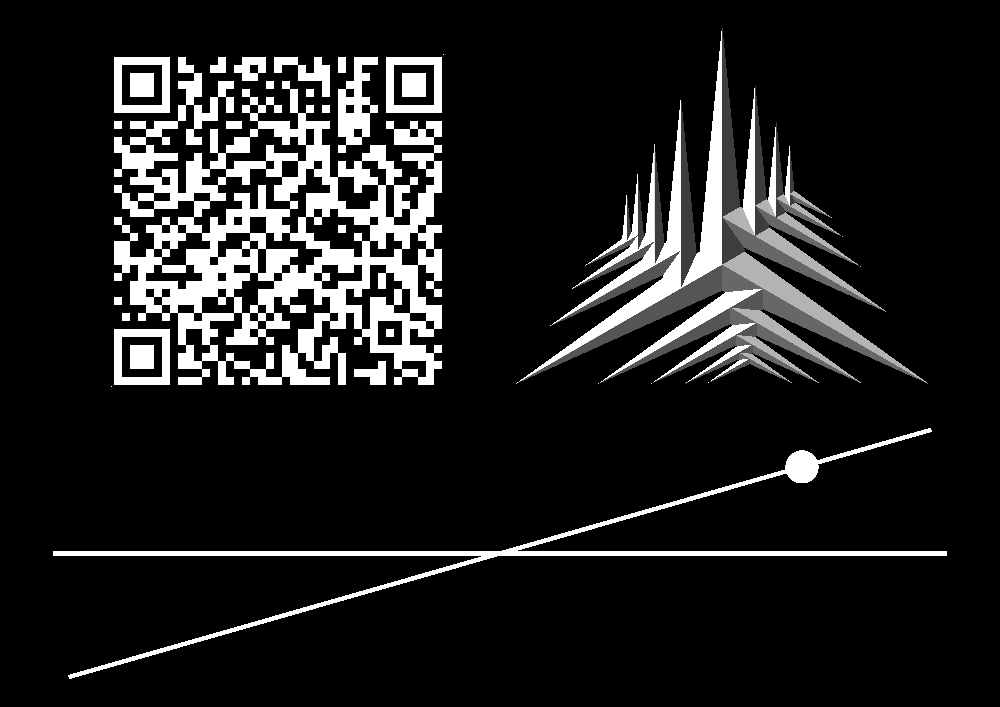

Finespun
Finespun


| Growth history | |||
|---|---|---|---|
| time | solar arrays | power generation | kardashev |
| 17 000 000 000 | 1 | 250kW | -0.060 |
| 17 250 000 000 | 2 | 500.000kW | -0.030 |
| 17 500 000 000 | 5 | 1.250MW | 0.010 |
| 17 750 000 000 | 16 | 4.000MW | 0.060 |
| 18 000 000 000 | 52 | 13.000MW | 0.111 |
| 18 250 000 000 | 167 | 41.750MW | 0.162 |
| 18 500 000 000 | 540 | 135.000MW | 0.213 |
| 18 750 000 000 | 1761 | 440.250MW | 0.264 |
| 19 000 000 000 | 5766 | 1.442GW | 0.316 |
| 19 250 000 000 | 14257 | 3.564GW | 0.355 |
| 19 500 000 000 | 25414 | 6.354GW | 0.380 |
| 19 750 000 000 | 39282 | 9.820GW | 0.399 |
| 20 000 000 000 | 55700 | 13.925GW | 0.414 |
| 20 250 000 000 | 80214 | 20.053GW | 0.430 |
| 20 500 000 000 | 107503 | 26.876GW | 0.443 |
| 20 750 000 000 | 135966 | 33.992GW | 0.453 |
| 21 000 000 000 | 165213 | 41.303GW | 0.462 |
| 21 250 000 000 | 195300 | 48.825GW | 0.469 |
| 21 500 000 000 | 225915 | 56.479GW | 0.475 |
| 21 750 000 000 | 256818 | 64.204GW | 0.481 |
| 22 000 000 000 | 288382 | 72.096GW | 0.486 |
| 22 250 000 000 | 320216 | 80.054GW | 0.490 |
| 22 500 000 000 | 352452 | 88.113GW | 0.495 |
| 22 750 000 000 | 384823 | 96.206GW | 0.498 |
| 23 000 000 000 | 400001 | 100.000GW | 0.500 |
| 160278 Finespun | |
|---|---|
| physical characteristics | |
| mean radius | 5552.5m |
| mean density | 3012kg/m^3 |
| mass | 2.159E+15kg |
| surface gravity | 4.674 mm/s2 |
| surface escape velocity | 7.2 m/s |
| albedo | 0.047 |
| keplerian elements | |
| semi-major axis (a) | 3.1407431 AU |
| eccentricity (e) | 0.2014501 |
| inclination (i) | 16.07761 deg |
| ascending node (Ω) | 247.31 deg |
| argument of perihelion (ω) | 160.866 deg |
| anomaly (M) | 35.982 deg |
| other orbital characteristics | |
| Perihelion | 2.5080402 AU |
| Apohelion | 3.773 AU |
| orbital period | 1.7565E+8 s ≈ 5.566 terran years |
| avg. orbital velocity | 16.807 km/s |
| other | |
| hill sphere radius at parahelion | 3756 km |
| hill sphere radius at apohelion | 4613 km |
| insolation at parahelion | 216.39W/m2 |
| insolation at semi-major axis | 137.99W/m2 |
| insolation at apohelion | 91.617W/m2 |
| equalibrium temperature | 157K = -116.15oC |